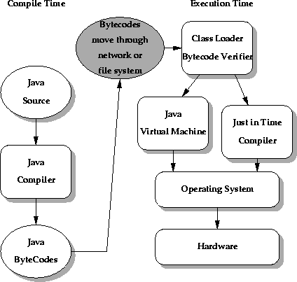
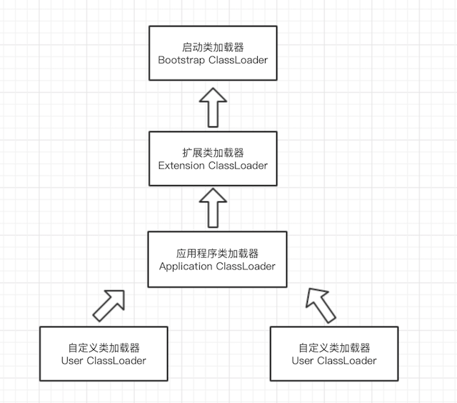

Java 类加载器
类加载
在 Java 类或接口编译为 Class 二进制字节码后，当我们用到该类或接口时，虚拟机就会将描述类的数据加载到方法区内存中，并对数据进行校验、转换解析和初始化，最终形成可以被虚拟机直接使用的 Java 类型，这就是虚拟机的类加载机制。
类型的加载、连接和初始化过程发生在程序运行期间。
Java 虚拟机中类加载的全过程包含：加载、验证、准备、解析和初始化，这里我们只介绍加载一个阶段。

加载
加载阶段，虚拟机规范要求虚拟机主要完成一下 3 件事情：
- 通过一个类的完全限定名称来获取定义此类的二进制字节流。
- 将这个字节流所代表的静态存储结构转化为方法区的运行时数据结构。
- 在内存中生成一个代表类的
java.lang.Class对象，作为方法区的这个类的各种数据的访问入口。
HotSpot 虚拟机是将生成的该 Class 对象放在了方法区中，而不是堆中。
虚拟机规范并未指明二进制字节流要从一个 Class 文件中获取，准确说根本没有指明从哪里获取、怎样获取，我们可以从：
- 从 ZIP 包中读取，比如 JAR、EAR、WAR。
- 从网络中获取，比如 Applet。
- 运行时计算生成，这种场景使用最多的就是动态代理技术，在
java.lang.reflect.Proxy中，使用了ProxyGenerator.generateProxyClass来为特定接口生成形式为 “*$Proxy” 的代理类二进制字节流。 - 由其它文件生成，典型场景就是 JSP 应用，即由 JSP 文件生成对应的 Class 类。
- 从数据库中读取…
类加载器简介
类加载用于实现类的加载动作，虚拟机把这个加载动态交给外部去实现，以便应用程序自己决定如何获取所需要的类。实现这个动作的代码模块称为“类加载器”。
对于任意一个类，都需要加载它的类和这个类本身一同确立在 Java 虚拟机中的唯一性，每个类加载，都拥有一个独立的类名称空间。对于不同类加载器加载的同一个 Class 文件，这两个类也必定不相等。这里的相等是指 Class 对象的 equals、 isAssignableFrom、isInstance 方法返回的结果。
每个 Class 对象都包含对定义它的 ClassLoader 的引用。
数组类的类对象不是由类加载器创建的，而是由 Java 虚拟机直接创建的。Class.getClassLoader() 返回的数组类的类加载器与其元素类型的类加载器相同；如果元素类型是基本类型，则数组类与引导类加载器关联。
支持并发加载类的类加载器称为并行加载类加载器，需要通过调用 ClassLoader.registerAsParallelCapable 方法在类初始化时注册自己。请注意，ClassLoader 类默认注册为并行。但是，它的子类如果具有并行能力，仍然需要注册自己。
在委托模型不是严格分层的环境中，类加载器需要具有并行能力，否则类加载会导致死锁，因为加载器锁在类加载过程的持续时间内保持不变（请参阅 loadClass 方法）。
通常，Java 虚拟机以与平台相关的方式从本地文件系统加载类。例如，在 UNIX 系统上，虚拟机从 CLASSPATH 环境变量定义的目录中加载类。
但是，某些类可能不是源自文件；它们可能来自其他来源，例如网络，或者它们可以由应用程序构建。方法 defineClass 将字节数组转换为类 Class 的实例，可以使用 Class.newInstance 创建此新定义的类的实例。
例如，应用程序可以创建网络类加载器以从服务器下载类文件。示例代码可能如下所示：
1 | ClassLoader loader = new NetworkClassLoader(host, port); |
网络类加载器子类必须定义方法 findClass 和 loadClassData 以从网络加载类。一旦下载了构成类的字节，就应该使用 defineClass 方法创建一个类实例。示例实现是：
1 | class NetworkClassLoader extends ClassLoader { |
类加载器类型
让我们首先学习如何使用各种类加载器使用一个简单示例加载不同的类：
1 | public void printClassLoaders() throws ClassNotFoundException { |
执行时，上面的方法打印：
1 | Class loader of this class:sun.misc.Launcher$AppClassLoader@18b4aac2 |
我们可以看到，这里有三种不同的类加载器：应用程序，扩展和引导程序（显示为 null）。
应用程序类加载器加载包含示例方法的类。应用程序或系统类加载器在类路径中加载我们自己的文件。
接下来，扩展程序加载 Logging 类。扩展类加载器加载类，它们是标准核心 Java 类的扩展。
最后，bootstrap 加载 ArrayList 类。引导或原始类加载器是所有其他加载器的父级。
我们可以看到最后输出，对于 ArrayList，它在输出中显示为 null。这是因为对于 HotSpot 虚拟机的引导类加载器是用本地代码（native code）而不是 Java 编写的 - 因此它不会显示为 Java 类。
现在让我们更详细地讨论每个类加载器。
引导（Bootstrap）类加载器
Java 类由 java.lang.ClassLoader 的实例加载。但是，类加载器本身就是类。因此，问题是，谁加载 java.lang.ClassLoader 本身？
这就需要介绍到 引导或原始类加载器。它主要负责加载 JDK 内部类，通常是 rt.jar 和位于$JAVA_HOME/jre/lib 目录中的其他核心库。此外，引导类加载器充当所有其他 ClassLoader 实例的父级。
此引导类加载器是核心 JVM 的一部分，并使用本地代码（native code）编写，如上说述，不同的 JVM 平台可能具有此特定类加载器的不同实现。
扩展类加载器
**扩展类加载器是引导类加载器的子类，负责加载标准核心 Java 类的扩展，**以便它可供平台上运行的所有应用程序使用。
扩展类加载器从 JDK 扩展目录加载，通常是 $JAVA_HOME/lib/ext 目录或 java.ext.dirs 系统属性中提到的任何其他目录。
应用程序类加载器
应用程序类加载器负责将所有应用程序级别的类加载到 JVM 中，由于这个类加载器是 ClassLoader 中的 getSystemClassLoader 方法的返回值，所以一般也称为系统类加载器。
**它负责加载在用户类路径环境变量 - classpath 或 -cp 命令行选项中找到的文件。**开发者可以直接使用这个类加载器，如果应用程序没有自定义过自己的类加载器，一般情况下这个就是程序中默认的类加载器。
类加载机如何工作？
类加载器是 Java 运行时环境的一部分。当 JVM 请求类时，类加载器会尝试使用完全限定的类名来定位类并将类定义加载到运行时。
java.lang.ClassLoader.loadClass() 方法负责将类定义加载到运行时。它尝试基于完全限定名称加载类。
如果尚未加载该类，它会将请求委托给父类加载器。此过程以递归方式发生。
最终，如果父类加载器没有找到该类，则子类将调用 java.net.URLClassLoader.findClass() 方法来查找文件系统本身中的类。
如果最后一个子类加载器也无法加载该类，则会抛出 java.lang.NoClassDefFoundError 或 java.lang.ClassNotFoundException。
如下代码说述：
1 | protected synchronized Class<?> loadClass(String name, boolean resolve) throws ClassNotFoundException { |
双亲委派模型
类加载器遵循委托模型，在请求查找类或资源时，ClassLoader 实例将类或资源的搜索委托给父类加载器，父类则委托给引导类加载器。
只有当引导类加载器和扩展类加载器在加载类时不成功时，系统类加载器才会尝试加载类本身。
类加载器双亲委派模型如下图所示：

上下文类加载器
就像我们之前学到的一样，JVM 中的类加载器遵循层次模型，这样每个类加载器都有一个父级，除了引导类加载器。
但是，有时当 JVM 核心类需要动态加载应用程序开发人员提供的类或资源时，我们可能会遇到问题。
例如，JNDI 服务，JNDI 现在已经是 Java 的标准服务，核心功能由 rt.jar 中的引导类加载。但 JNDI 的目的就是对资源进行集中管理和查找，这些 JNDI 类可能会加载由独立供应商实现的 JNDI 接口提供者（部署在应用程序类路径中）SPI 的代码。此方案要求引导类加载器（父类加载器）加载应用程序加载器（子类加载器）可见的类，但启动类不可能“认识”这些代码，怎么办？
为了解决该问题，Java 设计团队引出了一个不太优雅的实现；线程上下文类加载器（Thread Context ClassLoader）。
java.lang.Thread 类有一个方法 getContextClassLoader()，**它返回特定线程的 ContextClassLoader。**在加载资源和类时，ContextClassLoader 由线程的创建者提供。
如果创建线程时未设置该值，则默认从父线程的类加载器上下文继承一个，如果在应用程序的全局范围内都没有设置过的话，那这个类加载器默认就是应用程序类加载器。
有了线程上下文类加载器，JNDI 服务就可以使用这个线程上下文加载器去加载所需要的 SPI 代码，也就是父类加载器请求子类加载器去完成类加载器的动作。
Java 中所有设计 SPI 的加载动作基本上都采用这种方式，例如 JNDI，JDBC，JAXB 和 JBI 等。
非标准的加载模型
Sun 公司所提出的模块化规范在与 JCP 组织的模块化之争中落败给 JSR-291（OSGI R4.2），虽然 Sun 不甘失去 Java 模块化的主导权，独立在发展 Jigsaw 项目，但目前 OSGI 已经成为业界“事实上”的 Java 模块化标准，而 OSGI 实现模块化热部署的关键则是它自定义的类加载器机制的实现。每一个程序模块（OSGI 中称为 Bundle）都有一个自己的类加载器，当需要更换一个 Bundle时，就把 Bundle 连同类加载器一起换掉以实现代码的热替换。
OSGi 中，类加载器不再是双亲委派模型下的树状结构，而是进一步发展为更加复杂的网状结构。
二进制名称（完全限定名称）
作为 ClassLoader 中的方法的 String 参数提供的任何类名必须是由 Java™ 语言规范定义的二进制名称。 有效类名的示例包括：
1 | "java.lang.String" |
CLASSPATH
就像为系统配置 PATH 属性定义可执行文件的目录一样，CLASSPATH 就是为程序，包括 JDK 定义类的路径，就像它的字面意思 PATH of Class。
一般项目 CLASSPATH 可能包含两部分：
- Jar 包依赖文件（依赖的 CLASS 文件位置）
- 当前代码包的顶层路径（当前 CLASS 文件位置）
使用 maven 时，默认会将代码构建到 target/classes，同时也会包含依赖包的代码，它可能看起来如下：
1 | -classpath "/Users/zeral/Program/spring/spring-boot/smart-train-api/target/classes:/Users/zeral/Program/spring/spring-boot/smart-train-api/libs/CimLog.jar:/Users/zeral/Program/spring/spring-boot/smart-train-api/libs/ojdbc6.jar:/Users/zeral/.m2/repository/cglib/cglib/3.1/cglib-3.1.jar:/Users/zeral/.m2/repository/org/ow2/asm/asm/4.2/asm-4.2.jar |